|
Roda JC - Macabi Tel Aviv (4-1) 16-10-2001 |
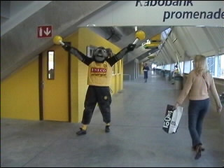
Een blij konijn viert de snelle openingstreffer van
Tom Soetaers (4e min.).
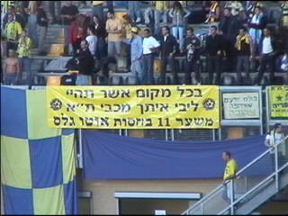
"Maar gelukkig zijn we beter in basketballen".
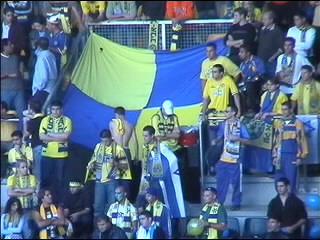
Er waren toch nog ruim 100 fans van Macabi.
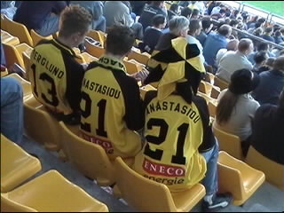
Frederic-Ioanis: 1-2.
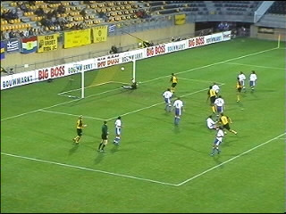
Prachtige goal van Soetaers (35e min).
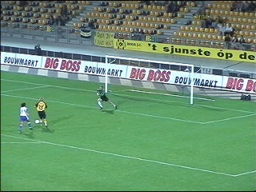
Hier gaat Berglund 3-0 scoren (54e min.).
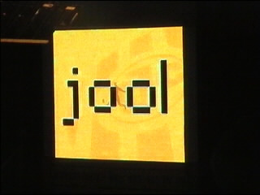
Jool = jool.
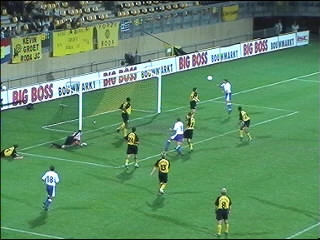
In de 78e min. kopt Horvath 3-1 in.
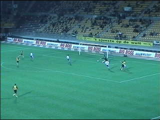
Sonkaya scoort in de 82e min.
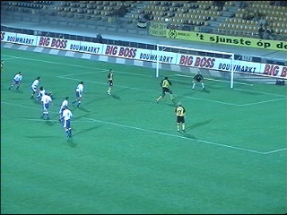
Schitterende kopbal van Lawal. De keeper krijgt
zijn hand er nog net onder.
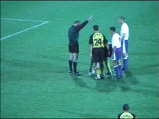
Van Dessel "veroorzaakt" een strafschop. Het
blijkt een hele opgave te zijn om de bal op de
stip te leggen. Vrede komt helpen door een gat
in de mat te trappen.
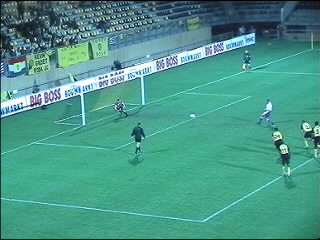
Het schot wordt gekeerd door Zeljko Kalac.
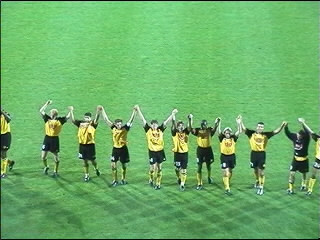
Eric van der Luer begrijpt wat het publiek wil en
organiseert een fatsoenlijk dank-je-wel naar de
harde kernen van zuid en west.
De slechts 5.000 toeschouwers zorgden voor een
prima sfeer.
©KPD